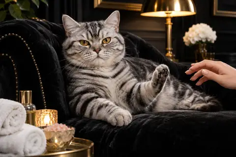

Spa pod nadzorem · nowa opowieść
Kąpiel kota. Wybrałem niewolnika, nie ratownika WOPR.
Zatrudniłem go do puszek. Sam awansował na kierownika aquaparku. Historia pewnego mokrego pomysłu — z praktycznymi wskazówkami na końcu.
Otwórz opowieść